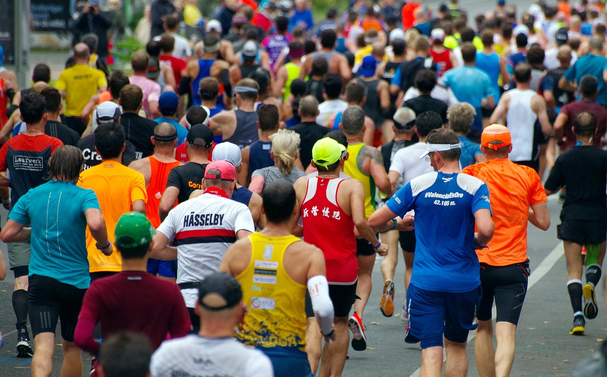
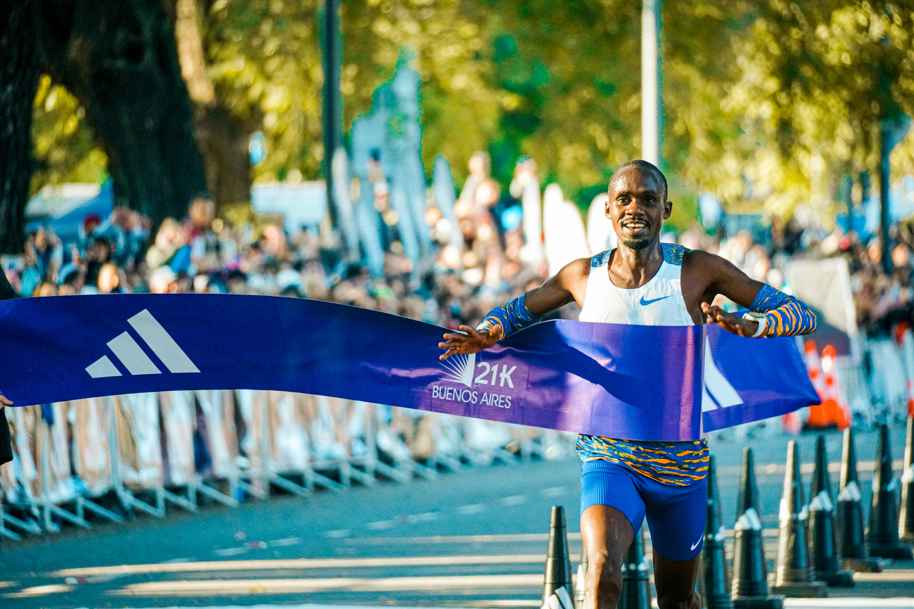
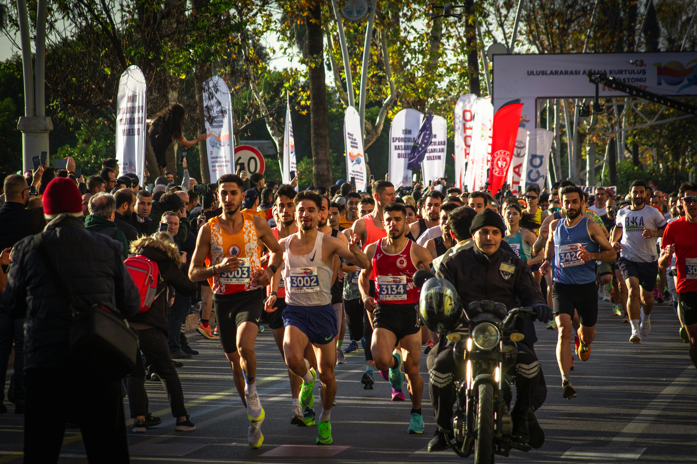

ALLA LOPP
Här hittar du information om både internationella och nationella lopp. Du kan även se olika typer av lopp, allt ifrån olika distanser till trail- och temalopp. Oavsett om du är en erfaren löpare eller precis kommit igång finns det ett lopp för dig!